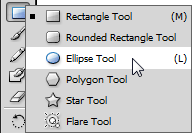
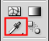

Being renamed - don't forget head - title and linkedin link04/08/15

This article is the first in a series of three that will demonstrate how to create a vector image in Adobe Illustrator from a source file. This article will demonstrate creating a vector image of the Dell logo, which is labelled for reuse.
The steps we will cover comprise:
- designing the background
- designing the text
- using the Pen tool.
Let’s get started!
Creating the vector image background
To create the vector image background:
- Open Adobe Illustrator.
-
Open the source file for the image you want to create a vector image of.
-
Click
 .
.
The Layers panel is displayed.

- Click
 to add a new layer.
to add a new layer. -
Double-click the new layer.
The Layer Options window is displayed. -
Rename the layer “Background”.
-
Select the Ellipse tool.

Note: When a tool has a black arrow you can hold down the mouse button when selecting to access additional tools. - Hold the Shift key to constrain the proportions of the ellipse.
-
Click and drag to create a circle that covers the Dell logo.
-
Click the circle while holding down the Alt key (Option on a Mac).
The mouse cursor changes to . - Drag away from the circle.
The circle is copied. -
Click the Selection tool.

- Select one of the circles.
-
Click the Eyedropper tool.
 -
Click the blue colour in the logo.
The colour is applied to the circle. - Click the Selection tool.
- Resize the remaining circle until it matches size of the white inner circle.
- Save the image.
You should save the file as:
- Adobe Illustrator (.ai) file
- Either
- EPS file (page layout, word processing and graphics)
- SVG file (web content).
And that’s the background ready!
Join me for the next article when we will create the text used for the Dell logo.